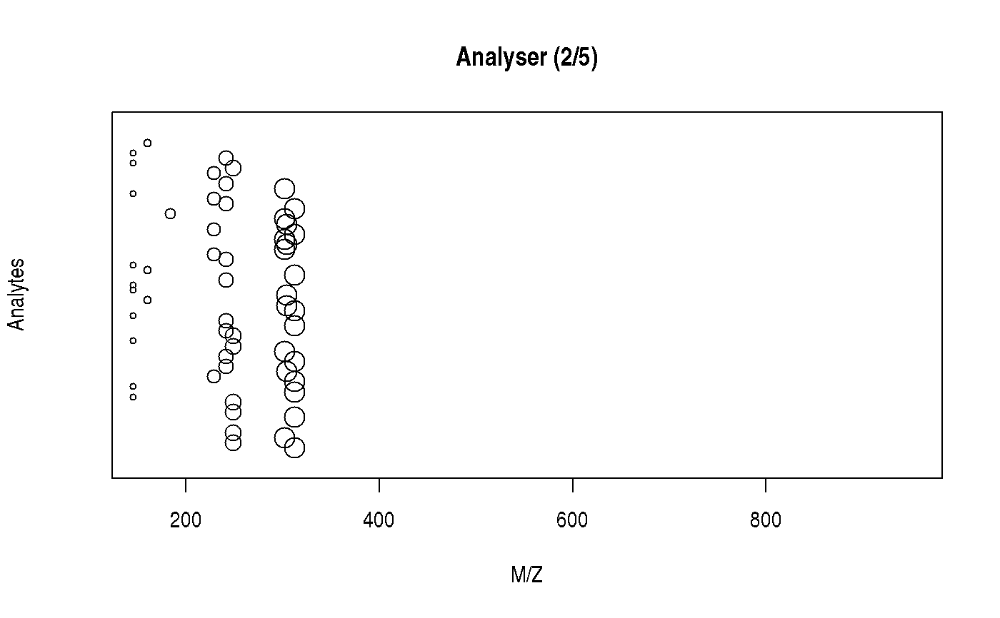
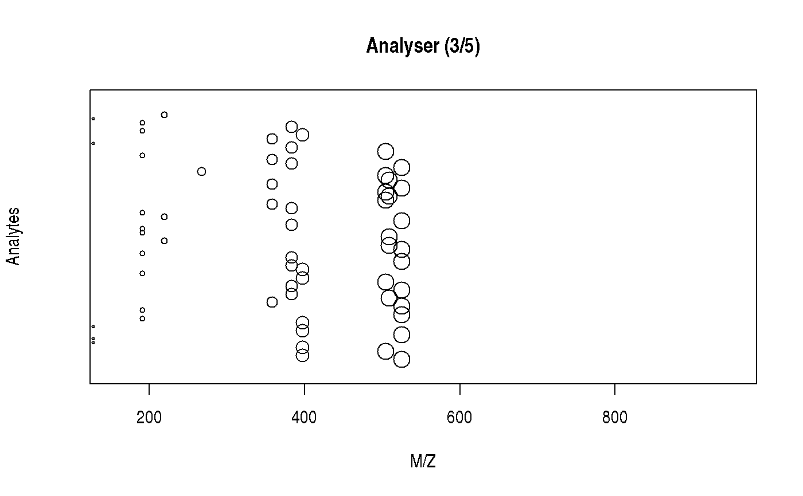

mstut.RdThis is the constructor function to generate a set of ions that can later be analysed with `analyse()` and detected with `detect()`.
new_ions(npeaks = 10, mzrange = c(100, 1000), nimg = 100) analyse(x, sleep = 0.1) analyze(x, sleep = 0.1) detect(x, new = FALSE) spectrum(x, ...)
| npeaks | A `numeric` scalar defining the number of unique peaks (M/Z values). Default is 10. |
|---|---|
| mzrange | A `numeric` of length 2 defining the range of possible M/Z values. Default is `c(100, 1000)`. |
| nimg | A `numeric` scalar. When analysing the ions, their separation along their M/Z values will be split along a sequence of length `nimg`. Default is 100. |
| x | An object of class `ions`. |
| sleep | How much time to wait before producing the next plot. |
| new | A `logical` scalar, indicating if the separated ions (last frame of calling `analyse) should be plotting, or whether the detection should be overlaid. Default is `FALSE`, to add the plot on top of the opened device. |
| ... | Additional arguments passed to [graphics::plot()]. |
An object of class `ions`.
`analyse`, `detect` and `spectrum` are used for their side effect or producing plots. They all invisibly return `NULL`.
set.seed(1L) x <- new_ions(nimg = 5) x#> Object of class 'ions': #> # analyze(.); detect(.); spectrum(.)analyse(x)detect(x)spectrum(x)